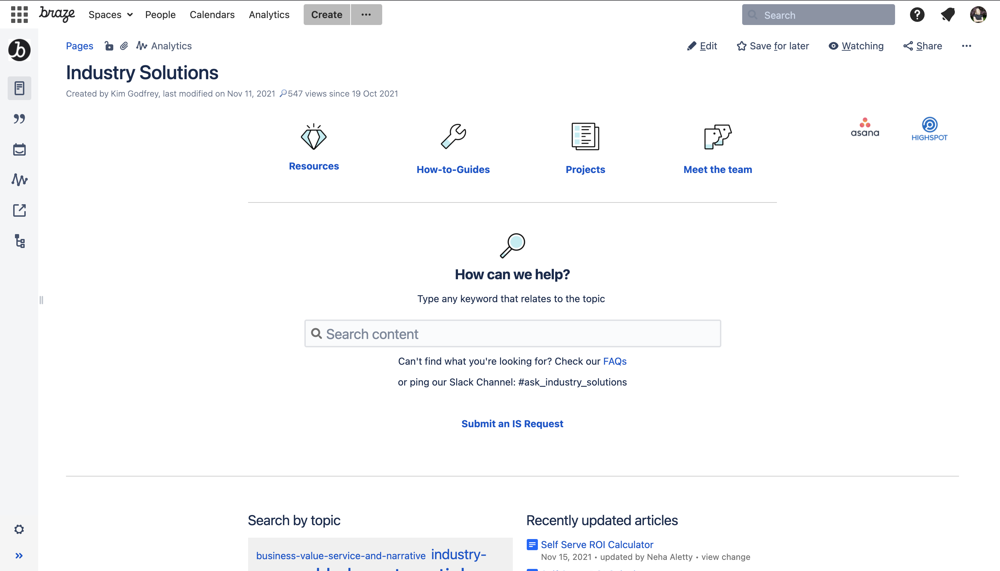

BRAZE / UI/UX DESIGN CONTRACTOR / 2021–2023
I designed internal tools
and sales materials
at Braze.
I redesigned a Confluence knowledge space, created ROI tool UI guidance and designed business-case slide templates.
See what I did ↓
Knowledge-space redesign · original work ↓MY CONTRIBUTION, DECISIONS AND RESULTS